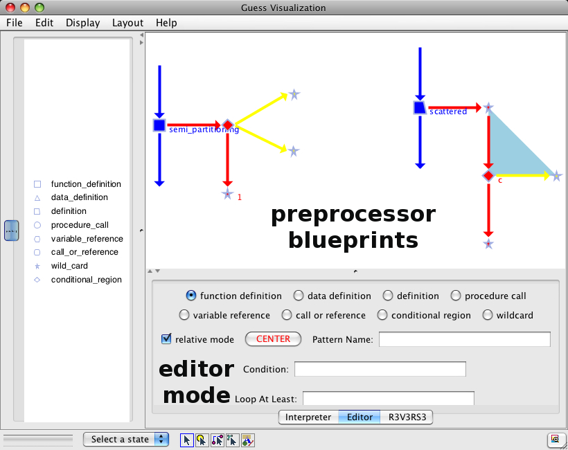
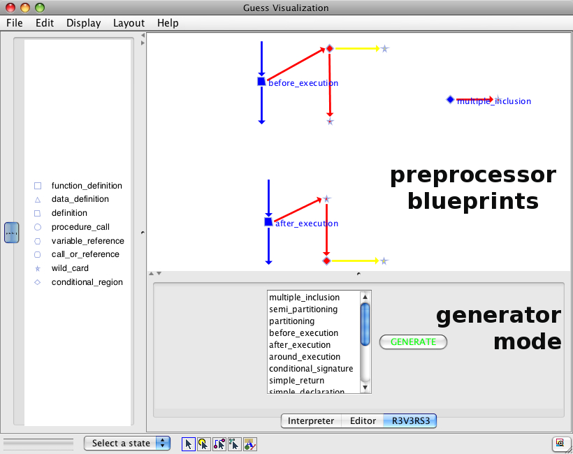

Recent News
- [August 7, 2009] Website published!
Screenshots


Functionality
R3V3RS3 is a framework which provides an interactive GUI to specify patterns of conditional compilation usage in C code ("preprocessor blueprints") and a Perl script generator to detect all occurrences of these patterns. It can be used to evaluate the potential of extracting conditional compilation usage into aspects, to enforce programming conventions or to keep track of conditional compilation usage in general. R3V3RS3 is built on the Fetch reverse-engineering framework.